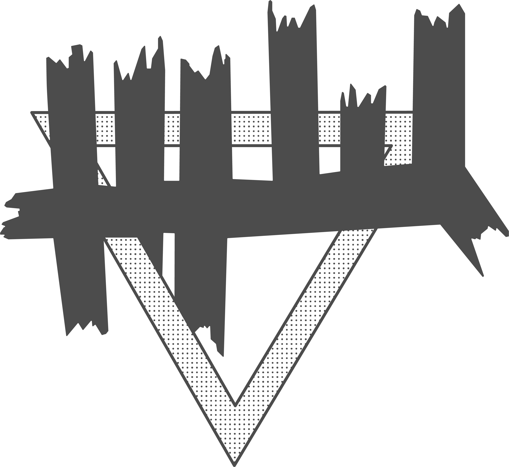
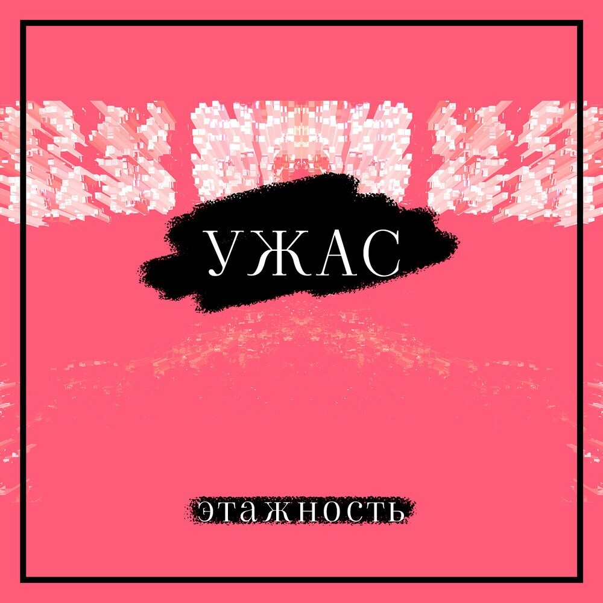
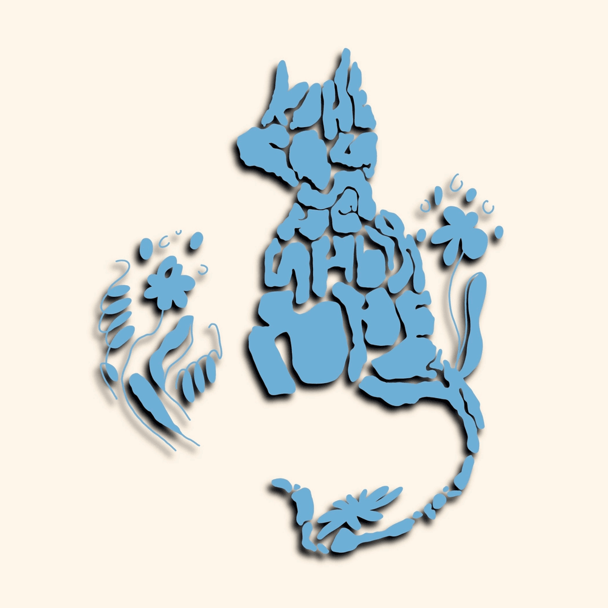
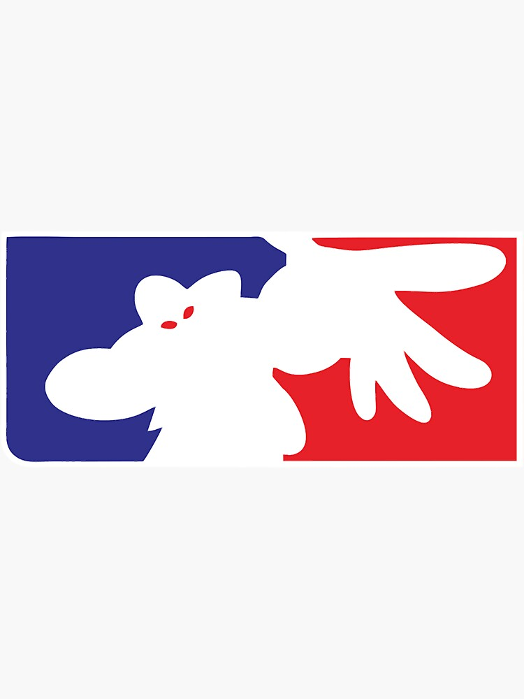

Фотография
Мне нравится переодически фотографировать различные крассивые виды
В будущем хотел бы научиться делать более профессиональные фотографии, чтобы подрабатывать этим
Вот пример некоторых моих фотографий:


Я увлекаюсь различной музыкой, от лёгкой электронной до тяжёлого рока
На данный момент моими любимыми группами являются "ЖЩ", "Этажность", "Конец солнечных дней", "Limp Bizkit"
Также я сам играю на гитаре, хочу научиться играть на клавишных, барабанах и скрипке
Мечтаю научиться петь и стать фронтменом группы, лиюо бэк-вокалистом




Мне нравится переодически фотографировать различные крассивые виды
В будущем хотел бы научиться делать более профессиональные фотографии, чтобы подрабатывать этим
Вот пример некоторых моих фотографий:
Мне нравятся различные виды комедий, но в особенности это StandUp и различные виды импровизации
Вообще есть мечта выступить со своим материалом на открытом микрофоне или на другом подобном мероприятии
Я люблю играть в компьютерные игры, как в одиночные, так и в многопользовательские
В основном я играю в Rogue-like, FPS и Sandbox игры
С друзьями мне нравится играть в Valorant и Minecraft
Я учусь программировать
По курсу университета я осваивал основы языков C# и C
В будущем хочу стать Frontend-разработчиком, поэтому сейчас стараюсь параллельно изучать HTML, CSS и JavaScript
Сейчас по программе университета у нас будет изучаться Java, я думаю этот язык может мне помочь в будущем
1. StandUp(Стендап) — это жанр комедийного представления, в котором один артист выступает перед живой аудиторией, рассказывая шутки и истории, как правило, в разговорной форме.